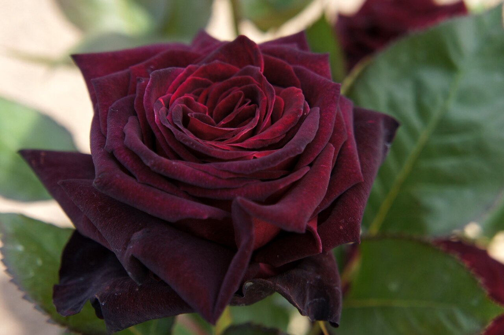
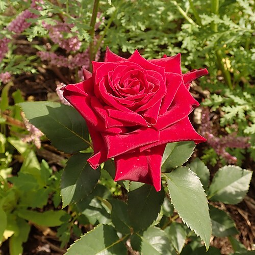

Hybrid tea
The classic florist's rose. It grows one large, elegant bloom on a long stem. Dark varieties include Black Baccara and Black Magic.

Welcome to the world of roses
Velvet petals so deep a red they look black. Find out what black roses really are, which ones to grow, and how to keep them blooming.
Explore the galleryAbout roses
Not quite, and that's part of the mystery. No rose is truly black. The roses we call "black" are very deep red or maroon, with petals so dark they look black in shade and at the edges of each bloom.
Their colour also changes with the weather. Cool conditions deepen it towards black, while strong sun and heat bring out the red. The same plant can look completely different from one month to the next.

Rose varieties
From the long-stemmed florist's favourite to the simple wild rose, each type grows and flowers in its own way.
The classic florist's rose. It grows one large, elegant bloom on a long stem. Dark varieties include Black Baccara and Black Magic.
Clusters of smaller blooms that keep flowering through the season. The deep-red Europeana in the gallery is one.
Long, flexible canes that can be trained up walls, fences and arches, covering them in flowers.
The ancestors of garden roses. They have simple five-petalled flowers, often followed by colourful rose hips.
Rose care
Roses aren't fussy if you get four basics right.
Plant where they get at least six hours of direct sun a day. More sun means more flowers.
Water deeply at the base a couple of times a week rather than a little every day. Keeping the leaves dry helps prevent disease.
Prune once a year while the plant is dormant. In South Africa that's usually late July to mid-August.
Feed after pruning and again after each flush of flowers. A layer of mulch keeps the roots cool and moist.
Rose gallery
Tap or click any photo to see it full size. You can use the arrow keys to move between photos.
Contact us
Have a question, or a dark rose of your own to show off? Send a message.
This is a demo form: it checks what you type, but messages aren't sent anywhere.